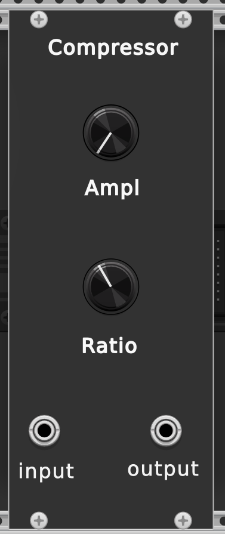

Module VCV Rack : Résonance Stochastique
🎯 Objectif
Ce module simule un système multi-puits inspiré du phénomène de résonance stochastique, pour créer des notes musicales aléatoires mais contrôlées. Chaque changement de puits déclenche une note différente, envoyée en tension via une sortie 1V/oct pour piloter un oscillateur (VCO).
⚙️ Fonctionnalités
- Détection des changements d’état dans un potentiel bistable ou multi-puits.
- Association d'une note musicale à chaque puits détecté.
- Sortie de tension 1V/octave compatible avec les standards VCV Rack.
- Contrôle du rythme des notes (durée minimale entre deux changements).
- Affichage graphique du potentiel et de la position du système.
- Ajout de deux systèmes à seuil
🎛️ Interface utilisateur
SIGNAL: entrée du signal (bruité ou non).NOISE: entrée du bruit.V/OCT: sortie en tension (1V/oct) correspondant à une note.GATE: sortie de la fenêtre de la note.OUTPUT: Sortie du signal filtréRATE: durée minimale entre deux notes jouées.THRESHOLD: Paramètre de seuil des filtres à seuil avec une entrée de modulation.N: Paramètre de réglage du nombre de puits.Xb: Profondeur des puits.TAU: Réactivité du filtre.GRAPH DISPLAY: affiche le potentiel bistable/multi-puits et la trajectoire du système.SCALE X: Mise en échelle sur l'axe horizontalSCALE Y: Mise en échelle sur l'axe verticalSwitch (N, R): Basculer entre affichage temps réel (N) et affichage selon la note jouée (R) (fonctionne uniquement pour le filtre 3)

Module RS


🧠 Fonctionnement interne
- Intégration d'un signal bruité dans un système non linéaire (à seuil ou à potentiel).
- Détection de franchissement de seuils correspondant aux minima du potentiel.
- Contrôle de la durée pour éviter les transitions trop rapides.
🎵 Notes musicales
Chaque puits est mappé à une note :
- Par exemple : puits gauche → Do, centre → Mi, droite → Sol.
- Notes envoyées en tension :
note = baseNote + décalage, convertie en volt (1V/oct).
💡 Idées artistiques
- Utiliser comme séquenceur probabiliste, contrôlé par le bruit.
- Créer des textures musicales dynamiques avec une structure cachée.
- Produire des événements rythmiques liés à la dynamique stochastique.
Modules


Tutoriel VCV Rack
Installation de VCV Rack
Sur Ubuntu
-
Installer les dépendances nécessaires :
sudo apt install unzip git gdb curl cmake libx11-dev libglu1-mesa-dev \ libxrandr-dev libxinerama-dev libxcursor-dev libxi-dev zlib1g-dev \ libasound2-dev libgtk2.0-dev libgtk-3-dev libjack-jackd2-dev jq zstd \ libpulse-dev pkg-config -
Cloner le dépôt de VCV Rack :
git clone https://github.com/VCVRack/Rack.git cd Rack -
Initialiser les sous-modules :
git submodule update --init --recursive -
Compiler VCV Rack :
make dep make make run # Lance VCV Rack
Installation du SDK de VCV Rack
Option 1 : Cloner depuis GitHub
git clone https://github.com/VCVRack/Fundamental.git
cd Fundamental
git submodule update --init --recursive
Option 2 : Télécharger le SDK
- Télécharger depuis ce lien :
Rack SDK - version Linux x64 - Décompresser le fichier ZIP.
- Définir la variable d’environnement
RACK_DIR:
export RACK_DIR=/chemin/vers/le/dossier/dezippe
Compilation
make dep
make
Développement d’un plugin
Définir le chemin du SDK dans .bashrc
- Ouvrir le fichier :
vim ~/.bashrc - Ajouter à la fin du fichier :
export RACK_DIR=/chemin/vers/le/dossier/du/sdk - Recharger la configuration :
source ~/.bashrc
Création d’un plugin à l’aide du template
Utiliser l’outil helper.py :
$RACK_DIR/helper.py createplugin MyPlugin
- Remplacer
MyPluginpar le nom de votre plugin. - Répondre aux questions posées.
Cette commande crée un dossier MyPlugin avec la structure suivante :
MyPlugin/
├── res/ # Contiendra le fichier SVG (interface graphique)
├── src/
│ ├── plugin.cpp
│ └── plugin.hpp
├── Makefile
└── plugin.json
Modifications nécessaires après génération :
-
Décommenter la ligne suivante dans
plugin.cpp:p->addModel(modelMyModule); -
Décommenter aussi cette ligne dans
plugin.hpp:extern Model* modelMyModule; - Remplacer
MyModulepar le nom de votre Module.
Ajouter un fichier SVG
- Placer le fichier SVG dans le dossier
res/. - Vérifier dans Inkscape (ou un autre éditeur) que les éléments graphiques sont bien nommés avec les bonnes couleurs.
- Param: red #ff0000
- Input: green #00ff00
- Output: blue #0000ff
- Light: magenta #ff00ff
- Custom widgets: yellow #ffff00
Création de module
cd MyPlugin
$RACK_DIR/helper.py createmodule MyModule res/MyModule.svg src/MyModule.cpp
Cette commande va créer les fichiers cpp automatiquement en fonction des composants trouvés dans le svg.
Compilation du plugin
Dans le dossier du plugin :
make install
Puis lancer VCV Rack (le plugin sera disponible s’il est dans le bon dossier plugins ou plugins-v2).
Les composants graphiques
Knobs (Potentiomètres)
| Nom du composant | Taille (px) | Description |
|---|---|---|
RoundHugeBlackKnob | 38x38 | Grosse molette noire, utile pour les paramètres principaux |
RoundLargeBlackKnob | 32x32 | Molette de taille moyenne |
RoundBlackKnob | 25x25 | Molette standard |
RoundSmallBlackKnob | 17x17 | Petite molette, pour paramètres secondaires |
Trimpot | 9x9 | Molette minuscule pour ajustements fins |
- Base class :
SvgKnob - Méthode de création :
createParamCentered<...>()
Boutons (Buttons)
| Nom du composant | Taille (px) | Description |
|---|---|---|
LEDButton | 15x15 env. | Bouton cliquable avec LED intégrée (toggle ou momentary) |
CKD6 | 9x9 | Petit switch carré (toggle) |
CKSS | 9x12 | Interrupteur à deux positions |
CKSSThree | 9x12 | Interrupteur à trois positions |
MomentarySwitch | 10x10 env. | Bouton poussoir temporaire |
- Base class :
SvgSwitch - Méthode de création :
createParamCentered<...>()
Ports
| Nom du composant | Taille (px) | Description |
|---|---|---|
PJ301MPort | 15x15 | Port jack classique pour entrée ou sortie (CV, audio, gate) |
- Base class :
SvgPort - Méthode de création :
createInputCentered<...>()oucreateOutputCentered<...>()
LEDs (Lumières)
| Nom | Taille approx. | Description |
|---|---|---|
TinyLight | 2x2 | LED minuscule |
SmallLight | 5x5 | LED standard |
MediumLight | 7x7 | LED un peu plus grande |
LargeLight | 9x9 | LED visible à distance |
VeryLargeLight | 11x11 | LED très grande |
Types de couleurs (template) :
RedLightGreenLightBlueLightYellowLightWhiteLightOrangeLightPurpleLightCyanLight- Base class :
ModuleLightWidget - Méthode de création :
createLightCentered<...>()
Vis / Visuels divers
| Nom du composant | Taille (px) | Description |
|---|---|---|
ScrewSilver | 7x7 | Vis d'apparence argentée |
ScrewBlack | 7x7 | Vis noire |
- Base class :
Widget - Méthode de création :
createWidget<...>()
📦 Classes de base (héritage)
| Classe de base | Description |
|---|---|
SvgKnob | Base pour les knobs |
SvgSwitch | Base pour les boutons/interrupteurs |
SvgPort | Base pour les ports d'entrée/sortie |
ModuleLightWidget | Base pour les LEDs |
Widget | Base générique pour composants graphiques |
🛠️ Exemple d'utilisation
addParam(createParamCentered(
mm2px(Vec(15.0, 40.0)), module, MyModule::PARAM_ID));
addInput(createInputCentered(
mm2px(Vec(5.0, 100.0)), module, MyModule::INPUT_ID));
addOutput(createOutputCentered(
mm2px(Vec(25.0, 100.0)), module, MyModule::OUTPUT_ID));
addChild(createLightCentered>(
mm2px(Vec(15.0, 70.0)), module, MyModule::LIGHT_ID));